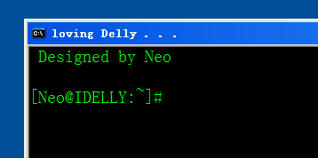

通过实现理想，证明实现理想是可能的；
通过开发开源软件并发布，证明开源软件是可能的；
即使是在中国。
通过开发开源软件并发布，证明开源软件是可能的；
即使是在中国。
clear
这是一个清屏的命令，通过它可以将终端上文字清空。 而且会修改提示符，根据参数不同，提示符也会有所不同。推荐尝试一下 clear linux 这个命令哦
@echo off REM 针对本程序斑驳不负担保责任，欲知详细请查看 GPL.txt REM 这是自由的程序，欢迎您在特定条件下再发布本程序。 REM REM 再次感谢使用斑驳的脚本 REM 斑驳敬上 REM if "%1"=="/?" ( echo Clear the screen and change the prompt echo. echo clear [option] echo. if use clear command without option, echo. that's default prompt for my Delly echo. echo. Options: echo. i prompt for iNeo, green words echo. linux a bash shell like prompt, happy echo. echo. NEO's Edition is Okay~ echo. goto :eof ) if not defined Delly call delly.bat else goto CLEAR if .%1==. goto CLEAR if .%1==.i ( prompt $Li$+Neo$G$S set Delly=i goto CLEAR ) if .%1==.linux ( prompt [%username%@%computername%:$+~]#$S set Delly=L goto CLEAR ) ::add new prompt as you like echo Invalid param. type clear /? for help echo If you want to add new item, try in C:\Windows\System32\clear.bat goto :eof :CLEAR cls echo. Designed by Neo echo.
补充
在脚本的开头注明帮助信息，当自己回头看代码的时候可以快速的了解其功能。 如果确定参数中不含空格等特殊字符，在 if 判断中不必用定界符将两边都包裹起来，这一点之前也有提过。 标志位的设置是比较有意思的事情，但是要小心的使用你所创建的那些变量。 还有，针对错误的选项，最好写出对应错误的原因以及帮助信息的调用方法。
补充 delly.bat 的关键代码，了解更多，请查阅 prompt /? 的系统帮助：prompt -$Q%date:~5,2%月%date:~8,2%日 周%date:~-1%$Q-$S通过 clear linux 命令之后的截图：

返回 | 置顶 | 下一页